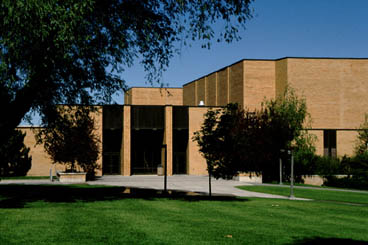

| General Information
|
 The Music Department of Brigham Young University-Idaho is an accredited institutional member of the National Association of Schools of Music.The department is housed in a beautiful and well-equipped facility for the performing arts. The faculty and facilities provide a superior choice for the serious student of music. In addition, the department offers an unusual diversity of opportunity for the general student to develop skills in instrumental or vocal performance, as well as to increase understanding Degrees with a number of specialized options are offered that will prepare
students to obtain a Baccalaureate degree in music education, piano pedagogy,
or performance. A two-year Associates degree in piano teaching is offered for
the student who plans to teach in the home after graduation from Brigham Young
University-Idaho. The music therapy Associates degree is offered for those
who want to gain a good foundation in Music Therapy and then matriculate to
another University to receive a baccalaureate in that subject..
|
| CONTACT INFORMATION
|
|
|